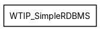
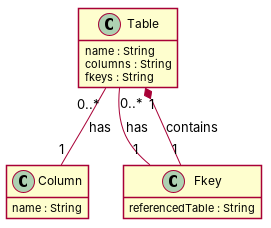

← all cases
D2/WTIP_SimpleRDBMS — model qwen, condition B, run 1
1. Requirements (input)
R1: Tables have name String.
R2: Columns have name String.
R3: There is a FKey in SimpleRDBMS.
R4: A table has zero or more fkeys.
R5: A table has zero or more columns.
R6: A FKey references exactly one table.
2. Result 1 → Result 2 (ambiguity removal)
Red, struck-through: removed by ambiguity removal; green: added.
| classes (4 → 4) |
|---|
| Column |
| Fkey |
| NameString |
| Table |
| relations (4 → 4) |
|---|
| has: Column -> NameString |
| has: Table -> Column |
| has: Table -> Fkey |
| has: Table -> NameString |
3. Ambiguity tags
| id | req | type | cue | status | readings / explanation |
|---|
| A1 | R4 | quantifier | zero or more | resolved | A table has exactly one fkey.; A table can have zero or more fkeys.
The requirement is ambiguous as it could mean a table must have at least one fkey or can have zero or more fkeys. |
| A2 | R5 | quantifier | zero or more | resolved | A table has exactly one column.; A table can have zero or more columns.
The requirement is ambiguous as it could mean a table must have at least one column or can have zero or more columns. |
4. Diagrams generated from the shared model
usecase diagram
class diagram
5. Code skeleton (Python; Java in code/java/)
"""Code skeleton generated from the shared model of D2/WTIP_SimpleRDBMS.
Every class and method records the requirement(s) it traces to."""
from __future__ import annotations
import dataclasses as _dc
import enum as _enum
import typing as _t
@_dc.dataclass
class Table:
"""Source: R5, R6"""
name: _t.Optional[str] = None
columns: _t.Optional[str] = None
fkeys: _t.Optional[str] = None
column: _t.Optional["Column"] = None
fkey: _t.Optional["Fkey"] = None
@_dc.dataclass
class Column:
"""Source: R2"""
name: _t.Optional[str] = None
@_dc.dataclass
class Fkey:
"""Source: R3, R6"""
referencedTable: _t.Optional[str] = None
6. Validation, checks and traceability
| python_compiles | True |
|---|
| java_compiles | True |
|---|
| attribute_mismatches | 0 |
|---|
| method_mismatches | 0 |
|---|
| use_cases | 0 |
|---|
| use_cases_without_actor | 0 |
|---|
| use_cases_without_method | 0 |
|---|
| actors_without_use_case | 0 |
|---|
| relations_to_unknown_class | 0 |
|---|
| inconsistencies | 0 |
|---|
| inconsistency_rate | 0.0 |
|---|
| requirement_coverage | 0.8333 |
|---|
| validator fixes | |
|---|
| assumptions for open ambiguities | [] |
|---|
7. Scores against the reference
| element | P | R | F1 | TP/FP/FN |
|---|
| classes | 1.0 | 1.0 | 1.0 | 3/0/0 |
| attributes | 0.4 | 0.667 | 0.5 | 2/3/1 |
| relations | 1.0 | 0.667 | 0.8 | 2/0/1 |
| relations_strict | 1.0 | 0.667 | 0.8 | 2/0/1 |